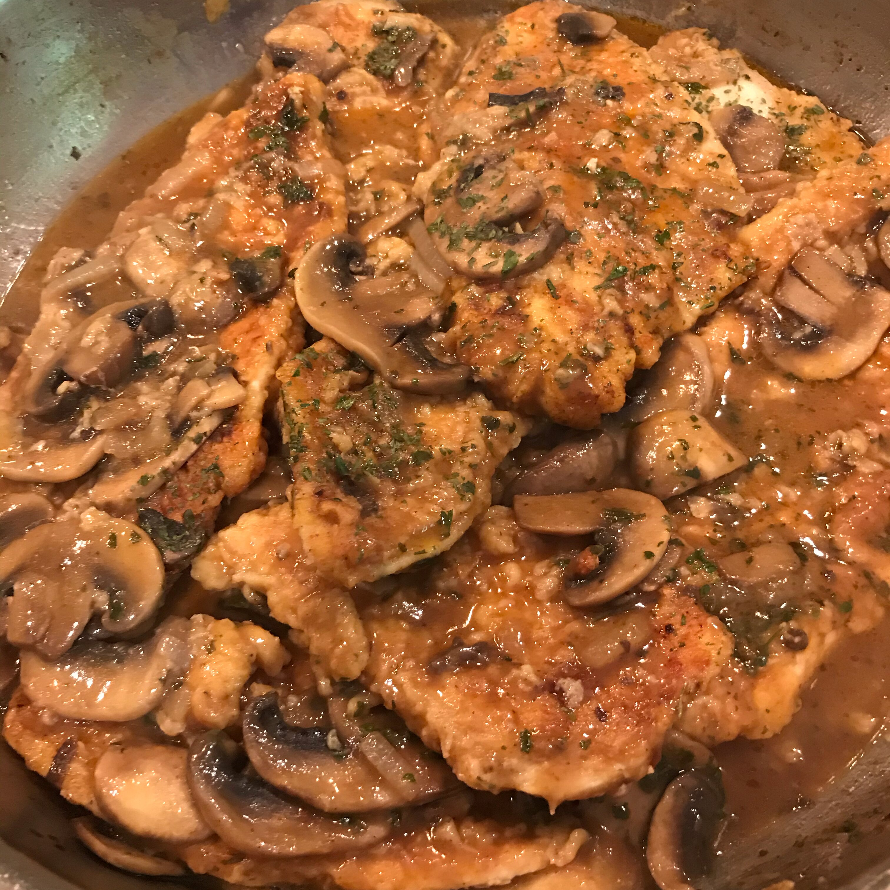

Chicken Picatta

Chicken Picatta is an Italian dish that is creamy and tangy at the same time.
Ingredients
- Chicken
- Chicken Stock
- Capers
- Flour
- Salt
- Pepper
- Lemon
Steps
- In a shallow dish or bowl, mix together flour, salt and paprika. In a separate dish or bowl, mix together egg and milk. Dip chicken pieces in egg mixture, then in seasoned flour.
- In a large skillet, heat butter or margarine over medium-high heat. Saute chicken pieces until golden brown. Add mushrooms and onion and saute for 3 to 5 minutes.
- In a medium bowl combine the broth, wine, lemon juice and cornstarch. Mix together and pour mixture over chicken and mushrooms. Reduce heat to medium low and let chicken mixture simmer for 25 minutes or until chicken is cooked through and juices run clear. Sprinkle with parsley and serve.